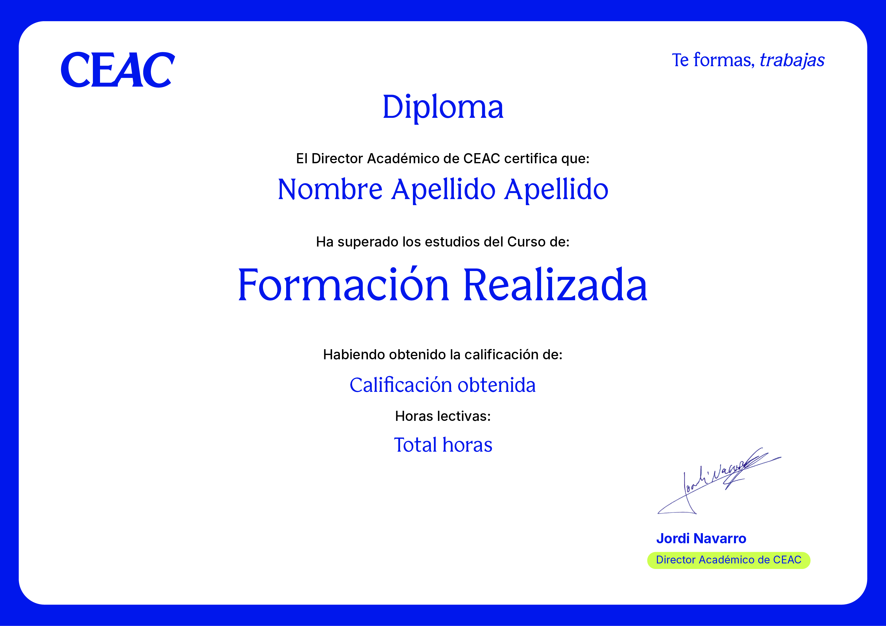
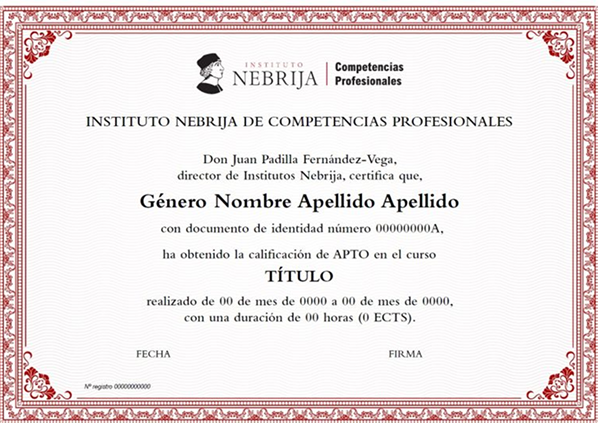
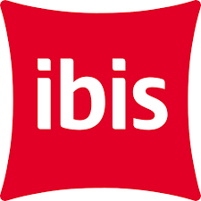

+3M
de alumnos formados

Programa avalado por:

Más de 80 años formando a profesionales que transforman su futuro.
CEAC es un centro de formación para el empleo con una trayectoria de décadas en las que ha impulsado la carrera profesional de más de tres millones de alumnos.
+3M
de alumnos formados
+80
años de experiencia
+250
docentes en activo
Somos Agencia de Colocación
Autorizada nº 1200000120

Madrid
Pl. Cronos, nº 1, 28037
Cód. centro: 28081169
Barcelona
C. de Salvador Espriu, 38, 08908 L'Hospitalet de Llobregat
Cód. centro: 08078282
Valencia
Avenida de la Ilustración, 4, 46100 Burjassot
Cód. centro: 46037650
Sellos de calidad


La de DJ es una profesión consolidada, con demanda real y un mercado en expansión constante. Tan solo la industria de la música electrónica mueve miles de millones de euros cada año, y quienes saben manejarse detrás de los platos tienen un lugar reservado en ella. Además, esta profesión te ofrece algo que pocas otras pueden garantizar: libertad creativa. Cada sesión es una obra propia. Tú decides el recorrido sonoro, el ritmo de la noche, la emoción que el público se lleva a casa. Ese poder de conexión entre el artista y su público es único.
Las salidas son amplias y diversas: salas de conciertos, festivales nacionales e internacionales, emisoras de radio, plataformas de streaming, residencias en clubs, producción musical propia... El mercado no solo busca talento; busca profesionales formados que sepan adaptarse a cada escenario y audiencia. Si la música ya forma parte de tu vida, la pregunta no es si dar el paso. La pregunta es cuándo.
Un salario medio de hasta
1.800 €
al mes como punto de partida
La industria de la música electrónica vale
15.100 M
dólares a nivel mundial
La venta de entradas en clubs de Ibiza alcanzó
160 M
€
en 2025
Hay personas que escuchan música, y hay personas que la sienten de otra manera: analizando cada transición, imaginando cómo reaccionaría la sala, preguntándose qué vendría después. Si tú eres de las segundas, ya tienes la materia prima de un buen DJ.
Con el Curso de DJ Profesional de CEAC darás el paso de la intuición a la técnica. Aprenderás a manejar con soltura los equipos de mezcla —controladores, CDJs, mezcladores analógicos y digitales—, a construir sesiones con criterio y estructura, y a leer a tu público para adaptar cada decisión musical al momento. La selección de temas, la gestión del tempo, las transiciones armónicas y el uso del software profesional son habilidades que se trabajan desde el primer día, con materiales actualizados y un enfoque completamente práctico.
Pero la técnica solo es la mitad del camino. El curso también te prepara para entender el negocio: cómo construir una identidad artística, cómo posicionarte en el mercado y cómo dar tus primeros pasos en la escena profesional con criterio y seguridad.
Tienes la pasión. Nosotros te damos las herramientas para convertirla en una carrera real. El escenario te está esperando.

Al terminar tu formación de Recepcionista de Hotel obtendrás dos acreditaciones: el diploma de CEAC y la certificación del Instituto Nebrija de Competencias Profesionales*. Un respaldo que refuerza tu perfil, acredita tus competencias en el sector turístico y te abre oportunidades en distintos tipos de hospedajes e, incluso, te habilita para gestionar tu propio negocio.
*Enseñanzas que no conducen a la obtención de un título con valor oficial.

Título propio CEAC
Diploma del Curso de Recepcionista de Hotel expedido por CEAC.

Diploma Nebrija
Aval del Instituto Nebrija de Competencias Profesionales*.
Nuestros contenidos te preparan para conseguir el certificado profesional HOT094_3 Recepción. Puedes hacerte con este reconocimiento a través del proceso de acreditación de competencias que se lleva a cabo en las diferentes Consejerías de Empleo de las comunidades autónomas*. Además, tienes la posibilidad de contratar el respaldo de la OMAT para realizar todos los trámites asociados.
*Para conocer el detalle si tu CC.AA. participa en el proceso de Acreditación de Competencias, por favor, consulta a nuestros asesores comerciales. La acreditación de competencias podrá variar según las actualizaciones de la legislación y, también, según la comunidad autónoma, puesto que cada una tiene competencias en materia de educación y formación profesional propias. Realizar esta formación no te otorga directamente el certificado profesional, pero te permite iniciar el proceso de acreditación de competencias para poder conseguirlo una vez lo superes. El temario está adaptado al certificado, si bien tendrás que presentarte por cuenta propia y las tasas que sean necesarias para participar en este proceso son ajenas a nosotros, es decir, no están incluidas en el precio del curso y deberás abonarlas a la entidad acreditadora correspondiente.

Con esta formación de Recepcionista de Hotel de CEAC aprenderás a desenvolverte en el trabajo real de la recepción hotelera, adquiriendo las habilidades técnicas y comunicativas necesarias para ofrecer una atención profesional y gestionar la experiencia de los huéspedes de principio a fin.

El camino que recorrerás como alumno
Te acompañamos a lo largo de todo el proceso, desde el primer día hasta tu salida al mercado laboral.

Todo tu curso, en un único lugar.
Encontrarás todos los recursos de tu formación en un mismo lugar: un campus virtual renovado y en constante actualización que te proporcionará una experiencia de usuario única. Fórmate a través de una plataforma muy intuitiva y visual en la que encontrarás todo tipo de ayudas multimedia para alcanzar tu objetivo.
Diferencias entre mercados turísticos, técnicas de marketing, nociones de primeros auxilios, inglés… Esta formación, de 510 horas lectivas, se ha creado contemplando todos los aspectos profesionales de una recepción de hotel. Aprenderás a trabajar en la gestión del correcto funcionamiento de un hospedaje, a aportar la información de la manera correcta y a tratar con empatía a los clientes. Una vez finalices, estarás preparado para ser el mejor anfitrión que pueden querer los viajeros.
Diplomada en Turismo y Licenciada en Traducción e Interpretación. Además, Rilo es Técnico Superior en Desarrollo de Aplicaciones Web. En su currículum también destacan un Máster de Profesorado y un Certificado de Profesionalidad de Habilitación Docente. Igualmente cuenta con conocimientos en materia de igualdad de género, orientación laboral, recursos humanos y facturación electrónica.
Licenciada en Filología Inglesa por la Universidad Autónoma de Madrid. Máster en Escritura Creativa por la UNIR. Programa de Escritura, Estilo y Creatividad por la VIU. Más de 15 años dedicada a la enseñanza del inglés en todos los niveles y edades.
Vive la experiencia del
sector turístico.
Además de la formación teórica, podrás realizar prácticas profesionales en empresas colaboradoras para conocer el funcionamiento real de la recepción de un hotel y adquirir experiencia en atención al cliente, gestión de reservas y operativa hotelera.
Tendrás la oportunidad de desenvolverte en un entorno profesional y aplicar todo lo aprendido durante el curso en hoteles, alojamientos turísticos y establecimientos del sector.
Trabajamos con empresas y colaboradores vinculados al ámbito turístico y hotelero para acercarte al mercado laboral desde el primer día.

Algunas de las empresas con convenio de prácticas
Colaboramos con hoteles, alojamientos turísticos y empresas del sector hospitality en toda España para acercarte a la realidad profesional y ayudarte a dar tus primeros pasos en el mercado laboral.



Accede a oportunidades laborales gracias a nuestro acuerdo con Randstad, empresa líder mundial en recursos humanos y selección de talento.

Te formas, trabajas